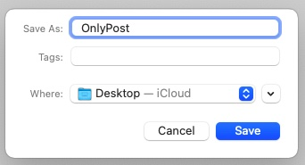
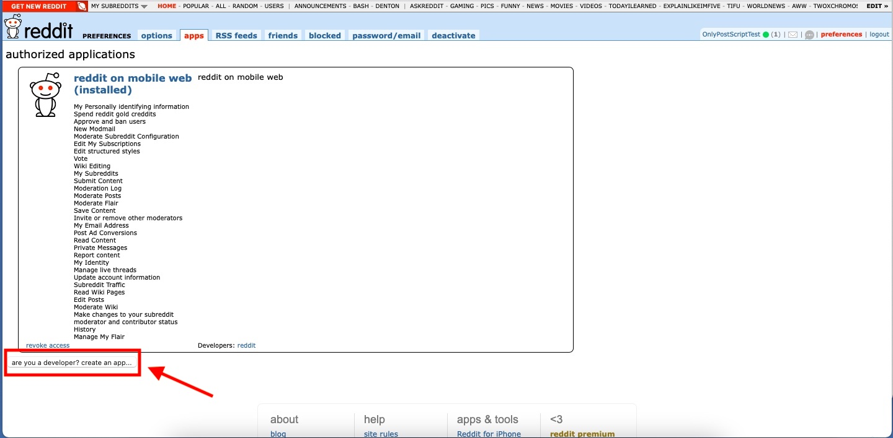
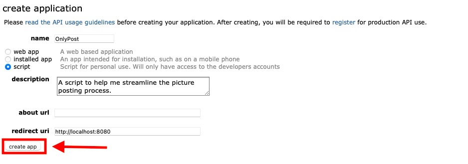
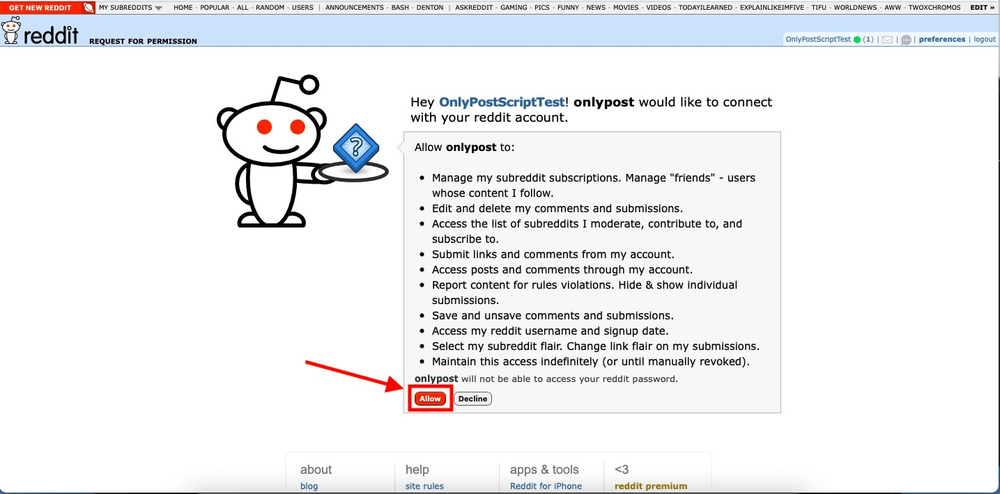

Please follow these instructions carefully and in order. This process should take about 20-30 minutes from start to finish.
Saving the OnlyPost Folder onto Your Desktop
Open the email I sent you containing the blue OnlyPost folder.
Right click the blue OnlyPost folder.
Click 'Save Attachment'
Click the drop down menu to the right of 'Where:' and select 'Desktop' (See image below step 5 for reference).
Click the save button.

Using the Terminal
Click the magnifying glass icon located at the top right of your screen (or hit command+space).
Type ‘Terminal’ into the Spotlight Search bar (do not include quotation marks).
Double click the "terminal" option with the black icon to the left displayed in the Spotlight Search bar.
Drag the Terminal icon (the black box at the bottom right of your screen) and drag it next to your safari icon to add it to your dock.
Click the red button in the upper left area of the terminal window (this is how you will close the terminal window from here on out).
To open a new terminal window as requested in some of the instructions below, all you have to do is click the black terminal icon in your dock.
Watch the embedded video tutorial below to see how to complete this section if you get confused with the written instructions above. Click the gear icon when the video starts playing to change the video quality to 720p if it appears blurry.
Copy and paste the red text below into the terminal and hit enter.
cd Desktop/Scripts; zsh osx_upgrade.sh
If your operating system is up to date enough to use the OnlyPost script you will see a message that says "Everything is up to date!". If your operating system is not up to date enough to use the OnlyPost script you will be prompted to update it. Please do so if prompted.
Close the terminal window when the script is done executing and you see the "[Process completed]" message at the bottom of your terminal screen.
Copy and paste the red text below into the terminal and hit enter.
cd Desktop/Scripts; zsh devToolsInstall.sh
Enter your macOS user password when prompted.
The terminal will display a list of what will be installed. Hit return (the enter button) when you are asked to do so.
Close the terminal window when the requirements are finished installing and you see the "[Process completed]" message (this process might take a few minutes).
Getting Your Notes App Ready
Open up your notes app (preferred) or get a piece of paper and a writing utensil (not preferred but will work if you don't have a notes app for whatever reason).
Copy and paste the text below into your notes app or write them down on your piece of paper if you're not using a notes app. Keep your notes app open and ready as you will be using it shortly.
My Client ID is: My Client Secret is: My Refresh Token is:
Go to the bottom of the screen and click the button that says ‘are you a developer? create an app...’

Copy and paste the red text below into the name box (look at the image below step 8 for reference).
OnlyPost
There will be three bubbles with ‘web app’, ‘installed app’, and ’script’ next to them. Select the bubble that says ‘script’ (look at the picture below step 8 for reference).
Copy and paste the red text below into the description box (look at the image below step 8 for reference).
A script to help me streamline the picture posting process.
Leave the about url box empty.
Copy and paste the red text below into the box titled ‘redirect uri’ (look at the image below step 8 for reference).
http://localhost:8080
Click the 'create app' button at the bottom left of the application form (look at the image below for reference).

Please copy your Client ID (the random numbers and letters) located under the title that says ‘OnlyPost’ and paste it into your notes after "My Client ID is:" (look at the image below step 10 for reference).
Please copy your Client Secret (the random numbers and letters) located to the right of ‘secret’ and paste it into your notes after "My Client Secret is:" (look at the image below for reference).
Copy and paste the red text below into the terminal and hit enter.
token
Copy and paste your Client ID into the terminal when asked to do so and press enter.
Copy and paste your Client Secret into the terminal when asked to do so and press enter.
Copy and paste the URL that the terminal gives you into your browser and click the allow button at the bottom of the page (see image below for reference).

Once you hit the allow button, a new tab will open with your refresh token. Your computer may not load this new page at first. This isn't an issue, simply refresh the page to see your token like I did in the video below. (ONLY COPY THE NUMBERS AND LETTERS THAT APPEAR AFTER "Refresh Token:" -- see video below for reference). Please copy your Refresh Token when it appears and paste it into your notes after "My Refresh Token is:"
Close the terminal window.
Watch the embedded video tutorial below to see how to complete this section if you get confused with the written instructions above. Click the gear icon when the video starts playing to change the video quality to 720p if it appears blurry.
Copy and paste the red text below into the terminal and hit enter.
cd Desktop/Scripts; zsh creds.sh
Enter all of the information you are asked for. This information is case sensitive so please be mindful of that when entering things.
Close the terminal window when the script is done executing and you see the "[Process completed]" message at the bottom of your terminal screen.
If you entered any of your Reddit credentials incorrectly in the above steps, simply copy and paste the red text under step 2 into the terminal again and hit enter to update your credentials with the correct information.
A Final Note on Security
You have now successfully set up your OnlyPost script. Please do not share any of the files in the OnlyPost folder that you have saved onto your desktop with anyone. At this point those files contain your Reddit login crednentials and if you were to send them to someone for any reason or let them read the files for any reason they will be able to see your Reddit username, password, etc.
Congratulations, you're all finished! Click here for instructions on how to post pictures and videoGIFs with your OnlyPost script.